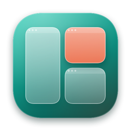
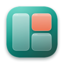

The desktop, one card away
A Desktop card at the end of the ⌘Tab loop and a Desktop tile in the Overview reveal the desktop by hiding other apps. Turn it off in Settings if you don't want it.

Paneflo is a menu bar app for macOS. Its ⌘Tab switches between windows instead of apps, it tiles windows from the keyboard, and its Overview keeps every window where you put it.
macOS 26 or later on Apple silicon. Free and open source under the MIT License.
Focus the shelf or point at a card to try it. The windows are made up.
Every window gets its own card: two Mail windows are two cards. Shift–Tab goes back, and the arrows choose while ⌘ is held.
With Screen Recording on, only the selected card shows a live picture. Every other card is a recent snapshot kept in memory.
No headings, key hints or badges. A small symbol marks minimized, hidden and paused windows, and the full title sits underneath.
With ⌘ held, W closes, M minimizes, H hides and Q quits, and the switcher stays open. Finder is never quit.
Send the front window to a half of its display, fill it, or take it back. When two windows share one display edge to edge, Paneflo treats them as a pair.
Click a window to bring it to the front, then use the keys.
⌃⌥ and an arrow key tiles the front window to that half. ⌃⌥Return fills its display and ⌃⌥Z undoes. The same arrangements are in the menu bar under Tile Front Window.
While switching, ⌘⌥← or → tiles the selected window without opening it first. Press the same half again to move it to the next display. ⌘⌥↑ fills, ⌘⌥↓ undoes.
Undo restores every window an arrangement moved and re-forms the pair it ended. If a window can't be arranged, a short note near the bottom of the display says why.
Left and right halves, or top and bottom, form a pair, whether Paneflo arranged them or you did. In ⌘Tab they sit side by side with a link at the seam.
After ⌘⌥← in the switcher, choose another window and press ⌘⌥→. It lands beside the first, and the two are paired.
Opening either window brings its partner forward too. ⌘⌥Return always opens the pair; ⌘A in the switcher opens the selection alone.
Tile a third window into a paired half and it pairs with the other half at once. The window it replaced goes back to where it was before.
Press ⌃⌥Space, or swipe up with three fingers if you turn the gesture on. Every window appears in its own place on a translucent overlay, and those places stay put from one day to the next.
Typing dims what doesn't match. Nothing reflows, so the window you want is still where you remember it.
Drop a window on a free place to move it there, or on another window to swap the two.
A pinned place stays as a faint outline until its app opens a window again. Free places fade away the next time the Overview opens.
The Overview is Paneflo's panel, with a Desktop tile first. Apple's Mission Control and Spaces are left as they are.
Paneflo lives in the menu bar, starts working once setup is done, and stays out of the way the rest of the time.
A Desktop card at the end of the ⌘Tab loop and a Desktop tile in the Overview reveal the desktop by hiding other apps. Turn it off in Settings if you don't want it.
A sidebar with General, Shortcuts & Help, Tiling, Overview & Gesture, Previews, Desktop, Permissions, Updates and About. Shortcuts & Help lists every key and gesture as searchable keycaps.
No analytics and no telemetry. The only network use is checking GitHub for updates and downloading them. Window snapshots stay in memory and are never written to disk.
Choose Check for Updates… in the menu, or let Paneflo check once a day. Before a download replaces the app, its size, checksum, version and code signature are verified against your installed copy.
The same list lives in Settings › Shortcuts & Help, searchable.
Most of it is granting the permissions macOS asks for. A setup guide walks you through each one.
Get Paneflo-1.1.0.zip from the latest release on GitHub and unzip it.
Drag Paneflo.app into your Applications folder, then open it.
Paneflo isn't notarized yet, so macOS blocks the first open. Go to System Settings › Privacy & Security and click Open Anyway. You only do this once.
Set up Paneflo opens by itself. Turn on Accessibility and Input Monitoring (both required), and Screen Recording if you want window previews. If a row asks, click Restart Paneflo.
That's it. ⌘Tab and the tiling keys work as soon as the required permissions are on.
In System Settings › Trackpad › More Gestures, set Mission Control and App Exposé to four fingers or off, then turn on the gesture in Settings › Overview & Gesture.
Paneflo isn't notarized by Apple yet, so Gatekeeper stops the first launch. Open System Settings › Privacy & Security, find the message about Paneflo and click Open Anyway. The source code is public, and every update's signature is checked against the copy you already have.
First click Restart Paneflo if the row asks for it: macOS often applies Input Monitoring and Screen Recording only after a relaunch. If it's still off, macOS may be holding an entry for an older copy. In Set up Paneflo (or Settings › Permissions), click Permissions stuck? Reset and grant again. It clears only Paneflo's own entries and walks you through granting them again.
Open Paneflo again from Spotlight, Launchpad or the Applications folder. The icon comes back and Settings opens on General. While it was hidden, your shortcuts and the gesture kept working.
The system's three-finger Mission Control and App Exposé swipes take priority. Set them to four fingers or off in System Settings › Trackpad › More Gestures, then turn on the gesture in Settings › Overview & Gesture. The gesture is optional and experimental, and works on the built-in trackpad. ⌃⌥Space always opens the Overview.
Choose Check for Updates… in the menu bar menu. Paneflo also checks once a day unless you turn that off in Settings › Updates, and never while the switcher or Overview is showing. A download replaces the app only after its size, SHA-256 checksum, bundle ID, version and code signature are verified, and only if it's signed with the same certificate as your copy, so your permissions carry over.
Choose Quit Paneflo from its menu and move Paneflo.app from Applications to the Trash. If you like, remove it from the Accessibility, Input Monitoring and Screen Recording lists in System Settings › Privacy & Security. Its settings and Overview places can be removed with defaults delete dev.paneflo.Paneflo in Terminal.
No. The Overview is Paneflo's own overlay. It doesn't change Mission Control, native Spaces or the system gestures.

macOS 26 or later on Apple silicon. Free, MIT licensed.